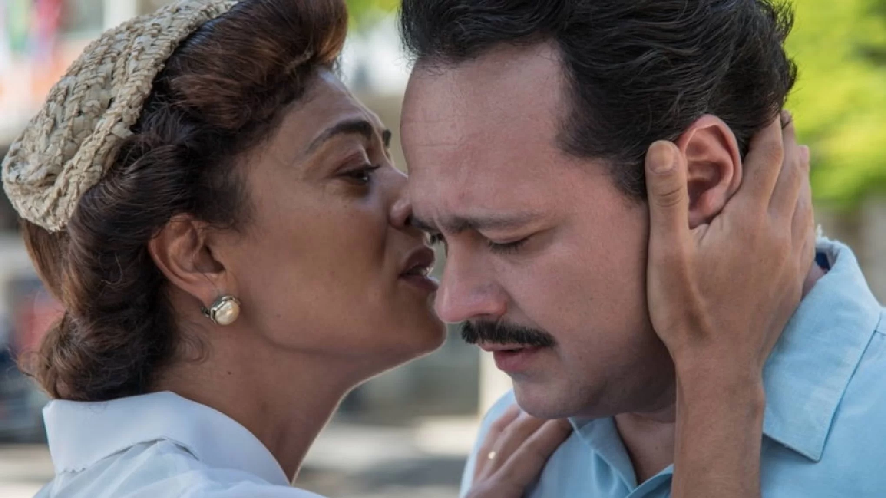

27 de outubro de 2022 - 15:00
Danton Mello e Juliana Paes protagonizam filme sobre o médium Zé Arigó — Foto: Divulgação
Inspirado na trajetória de Zé Arigó, famoso médium espírita brasileiro, o filme "Predestinado - Arigó e o espírito do Doutor Fritz" é sucesso de bilheteria nas salas de cinema de todo o país e foi gravado em cidades da Zona da Mata mineira.
Estrelado pelos atores Danton Mello e Juliana Paes, o enredo se passa na terra natal de Arigó, em Congonhas, mas foi filmado, principalmente, nas cidades de Rio Novo e Cataguases. Juiz de Fora também fez parte das gravações.
"Eu mergulhei, me joguei. Essa história realmente mudou o meu jeito de pensar. Não tem como você contar uma história como essa e sair do mesmo jeito que entrou. Eu saí muito mexido. É um iluminado, que ajudou tanta gente", disse Danton, que esteve em Cataguases no último fim de semana para uma coletiva de imprensa.
O filme de quase duas horas de duração foi gravado praticamente todo na Zona da Mata, nas cidades de Cataguases e Rio Novo. Segundo o produtor Roberto D'Ávila, as cidades apresentam características da antiga Congonhas de Zé Arigó.
"Encontramos em Rio Novo a parte urbana que se assemelhava ao que foi, pelas nossas pesquisas, Congonhas a essa época e retratamos em Cataguases, com esse patrimônio arquitetônico lindo, modernista e pré-modernista, o que eram as metrópoles que aparecem no filme", contou Roberto.
As gravações foram em 2018. Naquele ano, as ruas tranquilas de Rio Novo ganharam traços do século passado, com personagens trajados da época e cenários perfeitos para as filmagens, como a cadeia, usada para mostrar o momento em que Arigó foi preso.
Predestinado foi a maior produção cinematográfica no polo audiovisual da Zona da Mata. Lançado neste mês, o filme está em exibição em mais de 600 salas de cinema pelo país.


Projeto final do Projeto Rio Pomba Valley, desenvolvido por Januária Holmes
 Facebook
Facebook Twitter
Twitter Whatsapp
Whatsapp